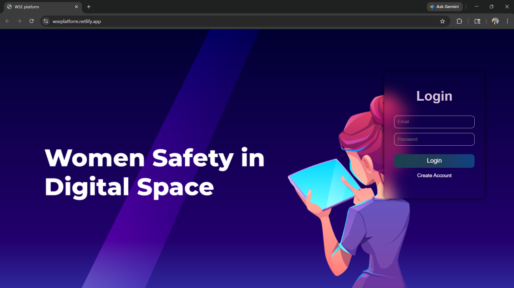
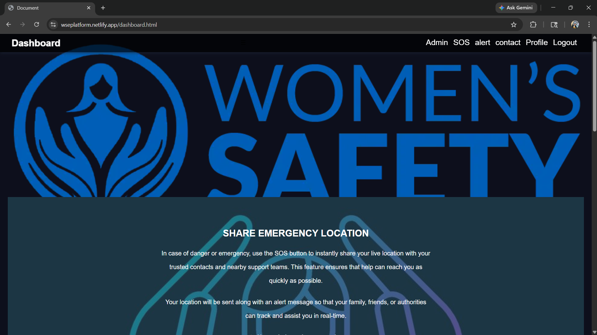
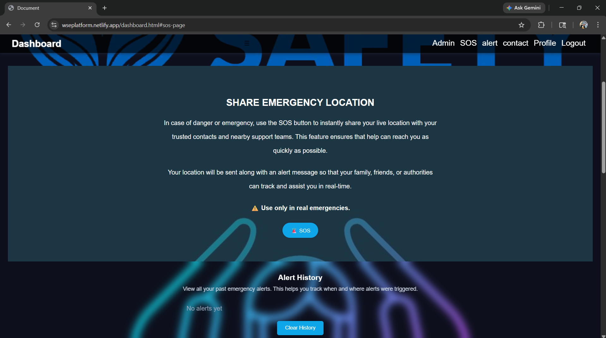
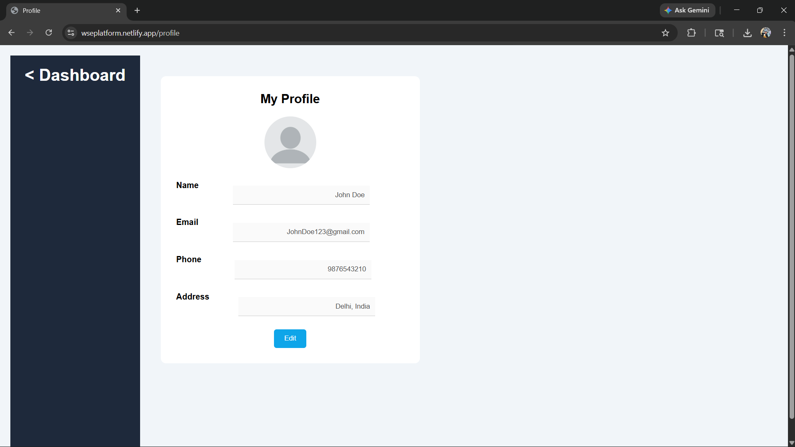
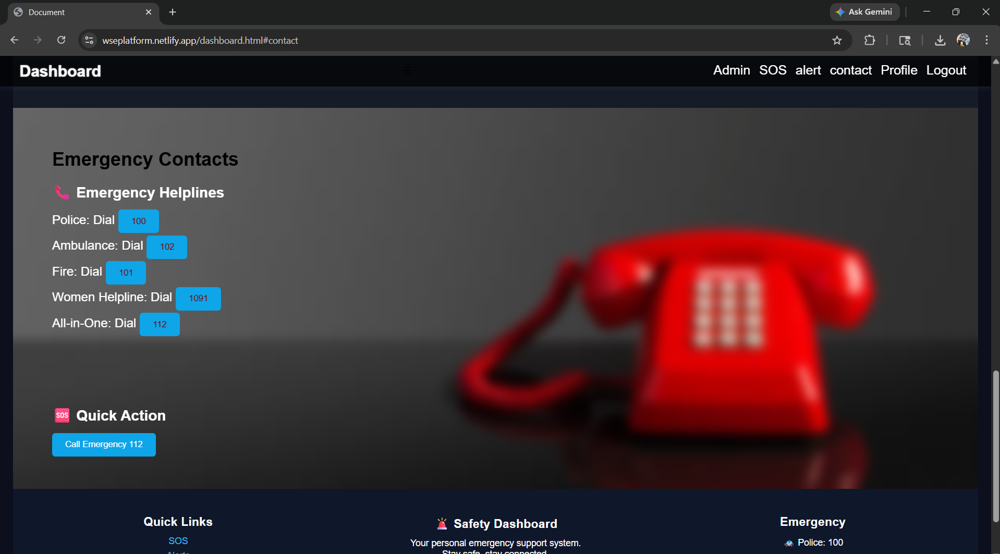

Project Report
The Women Safety & Emergency Platform is a web-based application designed to provide immediate assistance during emergency situations. It enables users to trigger SOS alerts, share their live location, and access emergency contacts quickly. The system maintains alert history and allows profile management.
In today’s world, women's safety has become a major concern. This project provides a digital solution that allows users to send emergency alerts, track location, and access help instantly.
| Technology | Purpose |
|---|---|
| HTML | Structure |
| CSS | Styling |
| JavaScript | Logic & Functionality |
| LocalStorage | Data Storage |
| Geolocation API | Location Tracking |
User → Browser → JavaScript → LocalStorage → Geolocation API
User login & registration using LocalStorage.
Fetches user location using Geolocation API and triggers alerts.
Stores previous alerts with timestamp.
Edit user details and upload profile image.
Displays all users in a table format.
Quick access to Police (100), Ambulance (102), Fire (101), Helpline (112).

Login Page

Dashboard

SOS Alert

Profile Page

Profile Page
This project demonstrates how web technologies can help build a safety system for women. With further improvements, it can be developed into a real-world solution.